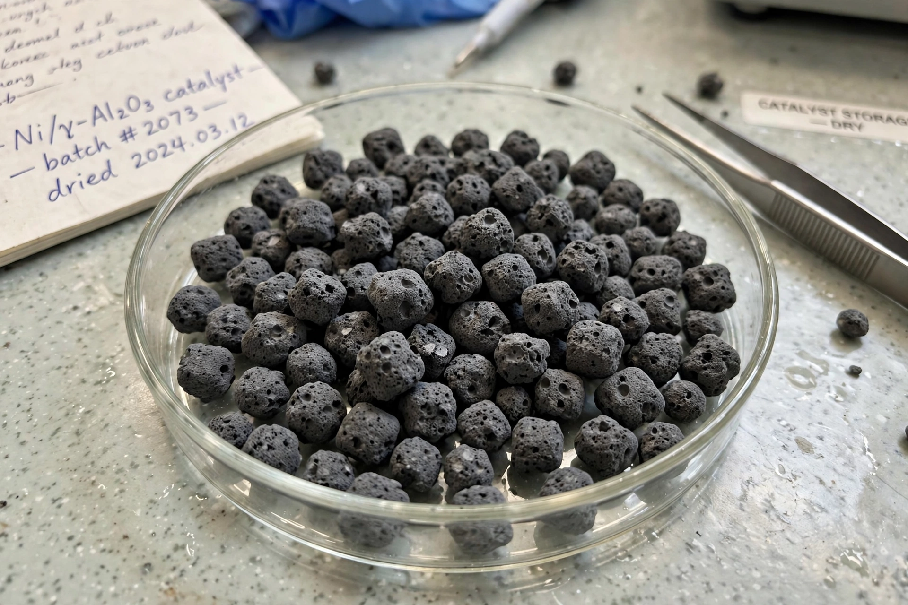

Raney nickel
| Raney nickel | |
|---|---|
 | |
| Composition | Porous nickel (from Ni–Al alloy), with residual aluminium and absorbed hydrogen |
| Inventor | Murray Raney (patented 1926) |
| Use | Heterogeneous catalyst for hydrogenation |
| Hazards | Pyrophoric when dry |
Raney nickel is a fine-grained solid catalyst composed mostly of nickel derived from a nickel–aluminium alloy, developed in 1926 by American engineer Murray Raney as an alternative to earlier hydrogenation catalysts. It is a spongy, highly porous material with an enormous surface area, and is widely used in industrial and laboratory hydrogenation reactions, including the hardening of vegetable oils and the reduction of functional groups in organic synthesis.
Preparation
The catalyst is prepared by treating a nickel–aluminium alloy (typically about 50:50) with concentrated sodium hydroxide solution. The aluminium is leached away ("activation"), leaving a porous nickel skeleton saturated with hydrogen generated during the leaching. Variants (designated W-1 through W-7 and others) differ in alloy composition, digestion conditions and washing, giving catalysts of different activity; small amounts of promoters such as iron, chromium or molybdenum may be included.
Properties and handling
Raney nickel is pyrophoric: the dry powder can ignite spontaneously in air because of its adsorbed hydrogen and high surface area. It is therefore stored and handled as a slurry under water or a solvent, and spent catalyst must be disposed of with care.
Applications
The catalyst hydrogenates alkenes, alkynes, nitriles, aromatics and carbonyl compounds under relatively mild conditions. A distinctive application is desulfurisation — the Mozingo reduction uses Raney nickel to remove sulfur from thioethers and thiols, converting C–S bonds to C–H bonds. Although partially displaced in some roles by palladium and platinum catalysts, Raney nickel remains important in large-scale processes such as the production of sorbitol and hexamethylenediamine.